library(tidyverse)
library(survey)
library(srvyr)
library(cmdstanr)
theme_set(theme_light())Verificación nacional muestral 2021
Estimación de indicadores
En esta parte veremos cómo reproducir la estimación actual de indicadores mediante paquetes de R.
act_tbl <- read_csv("datos/VNM2021_Actualizacion.csv")
#cob_tbl <- read_csv("datos/VNM2021_Cobertura.csv")names(act_tbl) [1] "Estrato" "UPM"
[3] "Ponderador" "Edo"
[5] "Flag_LN" "Cred_Vigencia_2019_o_2020"
[7] "Cred_Vigencia_2021" "Flag_CredRec_en_LN"
[9] "TipoDto2017" "Sexo_N"
[11] "GposEdad_80" "TSecc_U_y_NU_"
[13] "Flag_Tipo_de_Cedula_N" "N_ReSecPad"
[15] "D_ReSecPad" "N_ReDom"
[17] "N_CDNR" "N_MiMpo"
[19] "N_OMMEdo" "N_OEdo"
[21] "N_OPais" "N_NSCaDo"
[23] "N_MmoEdo" "N_Fall"
[25] "N_CRecNHVivDR" "SusDerPol"
[27] "VivDomErrSecc" "OtrCauNoResDom"
[29] "NoViveDomDesCau" "D_ReDom"
[31] "N_ErrS" "D_ErrS"
[33] "N_NoRec" "D_NoRec"
[35] "N_NReVH" "D_NReVH"
[37] "N_NRPNH" "D_NRPNH"
[39] "N_DNoLo" "D_DNoLo"
[41] "N_RHAE" "D_RHAE"
[43] "N_Trabaja" "N_Estudia"
[45] "N_EnfuHosp" "N_Viaje"
[47] "N_AOC" "N_AusNoSabe"
[49] "D_Causa" "N_ToE_Mpo"
[51] "N_ToE_OMpoEdo" "N_ToE_OtroEdo"
[53] "N_ToE_OtroPais" "N_ToE_NoSabe"
[55] "N_RegDia" "N_MenUM"
[57] "N_UaSeiMe" "N_MasSeisMMen1Añ"
[59] "N_Mas_1_Añ" "N_TANE"
[61] "N_AusTemp_6MoM" "N_AusTemp_Mas6M"
[63] "N_AusTemp_NoSabe" "D_Tiempo"
[65] "N_Mod_11_1" "N_Mod_11_2"
[67] "D_Mod_11_1_y_2" "N_Mod_AtenMB"
[69] "N_Mod_AtenB" "N_Mod_AtenR"
[71] "N_Mod_AtenMal" "N_Mod_AtenMuyMal"
[73] "N_Mod_AtenNoRec" "N_Mod_Aten_MB_y_B"
[75] "N_Mod_Aten_Reg_Mal_y_MM" "D_Mod_11_5"
[77] "N_Mod_12_3_1" "N_Mod_12_3_2"
[79] "N_Mod_12_3_3" "N_Mod_12_3_4"
[81] "N_Mod_12_3_5" "D_Mod_12_3"
[83] "N_Mod_12_4_1" "N_Mod_12_4_2"
[85] "N_Mod_12_4_3" "N_Mod_12_4_4"
[87] "D_Mod_12_4" act_tbl <- act_tbl |>
mutate(p = 1 / Ponderador)El diseño es estratificado PPT con reemplazo, usamos aproximación de 1 etapa para errores estándar. El diseño se especifica como:
dis_act <- svydesign(id = ~UPM, strata = ~Estrato, probs = ~p,
data = act_tbl) |> as_survey_design()Replicamos algunos resultados de tabla 5.1.1:
dis_act |>
group_by(Flag_LN) |>
summarise(
reseccion = survey_ratio(N_ReSecPad, D_ReSecPad),
redomicilio = survey_ratio(N_ReDom, D_ReDom)) |>
filter(Flag_LN == 1)# A tibble: 1 × 5
Flag_LN reseccion reseccion_se redomicilio redomicilio_se
<dbl> <dbl> <dbl> <dbl> <dbl>
1 1 0.862 0.00269 0.775 0.00325Replicamos algunos resultados por tipo de sección:
dis_act |>
group_by(TSecc_U_y_NU_, Flag_LN) |>
summarise(
reseccion = survey_ratio(N_ReSecPad, D_ReSecPad),
redomicilio = survey_ratio(N_ReDom, D_ReDom)) |>
pivot_longer(cols = starts_with("re")) |>
mutate(value = round(100 * value, 2)) |>
filter(Flag_LN == 1)# A tibble: 8 × 4
# Groups: TSecc_U_y_NU_ [2]
TSecc_U_y_NU_ Flag_LN name value
<dbl> <dbl> <chr> <dbl>
1 1 1 reseccion 85.2
2 1 1 reseccion_se 0.35
3 1 1 redomicilio 75.2
4 1 1 redomicilio_se 0.41
5 2 1 reseccion 88.4
6 2 1 reseccion_se 0.42
7 2 1 redomicilio 82.7
8 2 1 redomicilio_se 0.57Y finalmente, replicamos la estimación de fallecidos no reportados:
dis_act |>
group_by(Flag_LN) |>
summarise(
p_fallecidos = survey_ratio(100 * N_Fall, D_ReDom)) |>
filter(Flag_LN == 1)# A tibble: 1 × 3
Flag_LN p_fallecidos p_fallecidos_se
<dbl> <dbl> <dbl>
1 1 0.988 0.0573Estimación por estado
Ahora construimos estimaciones por Estado:
resumen_1 <-
dis_act |>
group_by(Edo, Flag_LN) |>
summarise(
prop = survey_ratio(100 * N_Fall, D_ReDom)) |>
filter(Flag_LN == 1)g_1 <- ggplot(resumen_1,
aes(x = factor(Edo), y = prop,
ymin = prop - 2 * prop_se,
ymax = prop + 2 * prop_se)) +
geom_point() +
geom_linerange() +
coord_flip() + ylim(c(-0.2, 3)) +
ylab("Proporción fallecidos")
g_1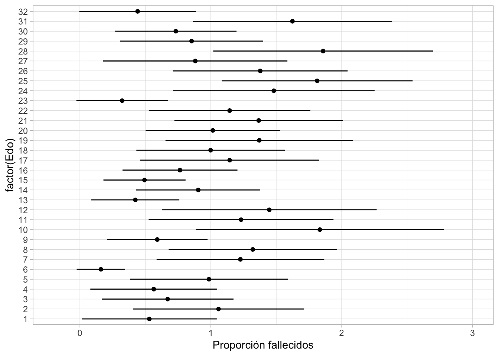
- Algunos intervalos cruzan 0. Los errores son grandes en términos relativos (de 50-100% aproximadamente).
ggplot(resumen_1, aes(x = prop,
y = 2 * prop_se)) +
geom_point() + geom_abline(slope = 0.5, intercept = 0) + coord_equal() +
labs(subtitle = "Estimaciones fallecidos por estado y error estándar")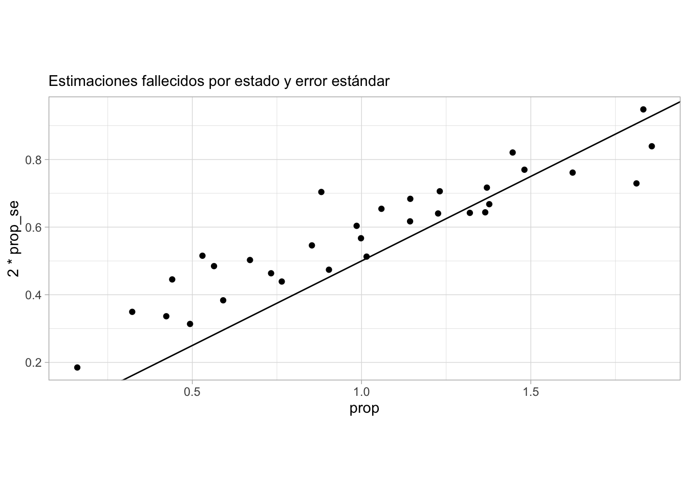
Modelos para estimación por estado
La primera estrategia es utilizar variables auxiliares. En este caso el grupo de edad es una variable importante:
resumen_edad_fallecidos <-
dis_act |>
group_by(GposEdad_80, Flag_LN) |>
summarise(
p_fallecidos = survey_ratio(100 * N_Fall, D_ReDom)) |>
filter(Flag_LN == 1)ggplot(resumen_edad_fallecidos,
aes(x = factor(GposEdad_80), y = p_fallecidos,
ymin = p_fallecidos - 2 * p_fallecidos_se,
ymax = p_fallecidos + 2 * p_fallecidos_se)) +
geom_point() +
geom_linerange() +
coord_flip()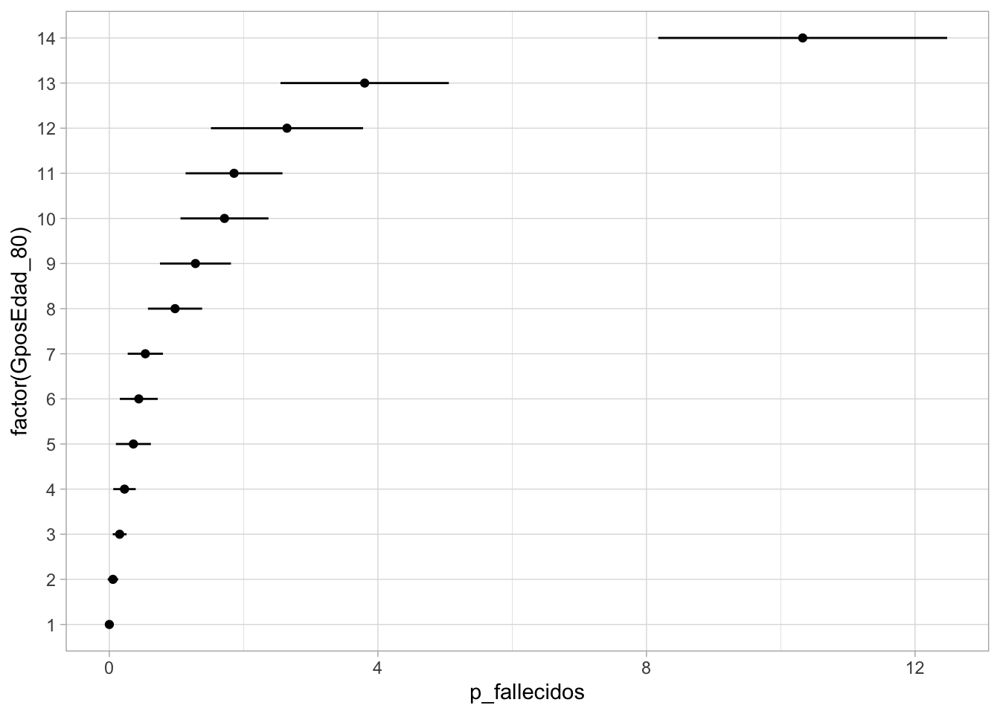
A nivel estrato, tenemos el siguiente resumen:
resumen_estrato_fallecidos <-
dis_act |>
group_by(Edo, Estrato, Flag_LN) |>
summarise(
p_fallecidos = survey_ratio(100 * N_Fall, D_ReDom),
p_1a7 = survey_mean(100 * (GposEdad_80 <= 7))) |>
filter(Flag_LN == 1)ggplot(resumen_estrato_fallecidos, aes(x = p_1a7,
y = p_fallecidos)) +
geom_point() + geom_smooth(method = "loess", span = 1, se = FALSE)`geom_smooth()` using formula 'y ~ x'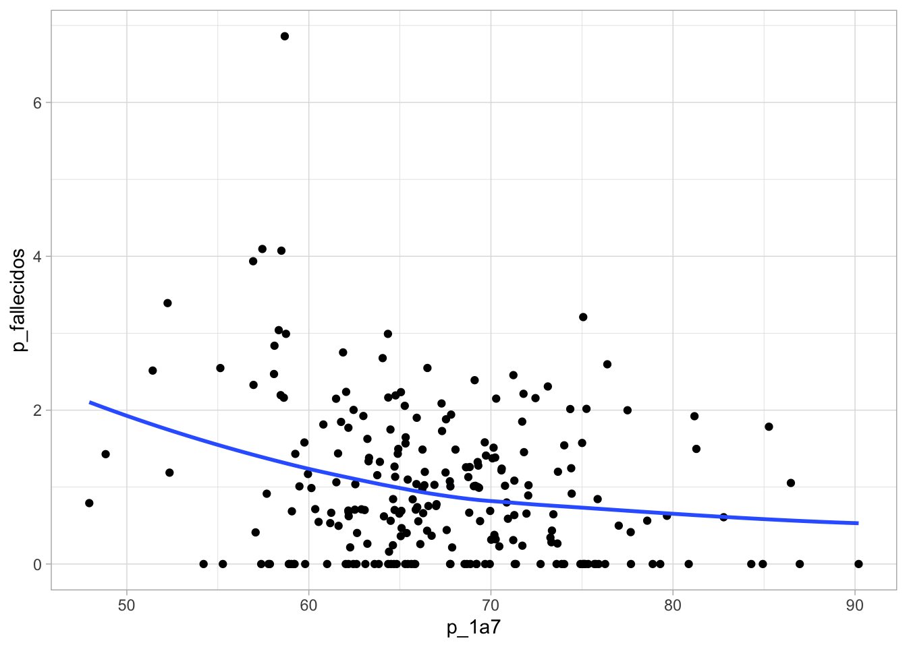
Recomendación 1: postestratificación
Postestratificar por estrato x grupos de edad puede ayudar en la estimación. Los valores poblacionales relevantes están disponibles en el padrón
Modelo bayesiano
En esta sección mostramos una manera de estimar utilizando modelos bayesianos.
Recomendación 2: uso de modelos para estimación
Los intervalos de confianza usuales, para la estimación de proporciones chicas, tienen mala cobertura. Aunque hay intervalos alternativos, una manera más flexible de resolver este problema es utilizando modelos bayesianos.
Preparamos datos:
datos_mod_tbl <- act_tbl |>
mutate(tipo = ifelse(
(Cred_Vigencia_2019_o_2020 == 1 | Cred_Vigencia_2021), 1, 2)) |>
select(Estrato, UPM, Edo, tipo, N_Fall, D_ReDom, Ponderador, Flag_LN, GposEdad_80) |>
filter(Flag_LN == 1) |>
group_by(Estrato, UPM, Edo, tipo) |>
summarise(n_obs = sum(N_Fall),
d_redom = sum(D_ReDom),
n_edad = sum(GposEdad_80 <= 7),
ponderador = sum(Ponderador * D_ReDom),
n = n()) |>
group_by(Estrato) |>
mutate(p_edad = sum(n_edad) / sum(n)) |>
ungroup() |>
mutate(upm_num = as.integer(factor(UPM))) |>
mutate(estrato_num = as.integer(factor(Estrato)))`summarise()` has grouped output by 'Estrato', 'UPM', 'Edo'. You can override
using the `.groups` argument.library(cmdstanr)
modelo <- cmdstan_model("stan/actualizacion-prop.stan")
cat(readLines("stan/actualizacion-prop.stan"), sep = "\n")data {
int<lower=0> N;
int<lower=0> num_secciones;
int<lower=0> num_estratos;
int<lower=0> num_estados;
real gamma;
real gamma_de;
array[N] int y;
array[N] int n;
vector[N] ponderador;
array[N] int estrato;
array[N] int estado;
array[N] int tipo_cred;
array[N] int seccion;
//array[N] real p_edad;
array[num_secciones] int estrato_secc;
}
// The parameters accepted by the model. Our model
// accepts two parameters 'mu' and 'sigma'.
parameters {
real beta;
matrix[num_estratos, 2] beta_e;
real beta_edad;
//vector[num_estratos] beta_e;
//vector[2] beta_tipo;
vector[num_secciones] beta_raw;
array[num_estratos] real<lower=0> sigma;
}
transformed parameters {
vector[N] alpha;
vector[num_secciones] beta_secc;
for(j in 1:num_secciones){
beta_secc[j] = beta_raw[j] * sigma[estrato_secc[seccion[j]]];
}
for(i in 1:N){
//alpha[i] = beta + beta_e[estrato[i]] + beta_tipo[tipo_cred[i]] + beta_secc[seccion[i]];
alpha[i] = beta + beta_e[estrato[i], tipo_cred[i]] + beta_secc[seccion[i]];
// beta_edad * p_edad[i]
}
}
model {
y ~ binomial_logit(n, alpha);
beta ~ normal(gamma, gamma_de);
to_vector(beta_e) ~ normal(0, 1);
//beta_tipo ~ normal(0, 1);
beta_raw ~ normal(0, 1);
beta_edad ~ normal(0, 1);
sigma ~ normal(0, 0.25);
}
generated quantities {
vector[num_estados] total_estado;
vector[num_estados] total_lista_estado;
real total;
real total_lista;
real prop;
vector[num_estados] prop_estado;
array[N] int y_rep;
total = 0;
total_lista = 0;
for(k in 1:num_estados){
total_estado[k] = 0;
total_lista_estado[k] = 0;
}
for(i in 1:N){
total += ponderador[i] * inv_logit(alpha[i]);
total_lista += ponderador[i];
total_estado[estado[i]] += ponderador[i] * inv_logit(alpha[i]);
total_lista_estado[estado[i]] += ponderador[i];
}
for(k in 1:num_estados){
prop_estado[k] = total_estado[k] / total_lista_estado[k];
}
prop = total / total_lista;
for(i in 1:N){
y_rep[i] = binomial_rng(n[i] , inv_logit(alpha[i]));
}
}secciones_tbl <- datos_mod_tbl |> select(estrato_num, upm_num) |>
unique() |> arrange(upm_num)
estrato_secc <- secciones_tbl$estrato_num
datos_lst <- list(gamma = -5, gamma_de = 1,
N = nrow(datos_mod_tbl),
num_secciones = max(datos_mod_tbl$upm_num),
num_estados = 32,
num_estratos = max(datos_mod_tbl$estrato_num),
y = datos_mod_tbl$n_obs,
n = datos_mod_tbl$d_redom,
tipo_cred = datos_mod_tbl$tipo,
ponderador = datos_mod_tbl$ponderador,
estrato = datos_mod_tbl$estrato_num,
seccion = datos_mod_tbl$upm_num,
p_edad = datos_mod_tbl$p_edad,
estado = datos_mod_tbl$Edo,
estrato_secc = estrato_secc
)ajuste <- modelo$sample(
data = datos_lst,
seed = 123,
chains = 4,
parallel_chains = 4,
refresh = 300,
iter_warmup = 300,
iter_sampling = 700
)Running MCMC with 4 parallel chains...
Chain 1 Iteration: 1 / 1000 [ 0%] (Warmup)
Chain 2 Iteration: 1 / 1000 [ 0%] (Warmup)
Chain 3 Iteration: 1 / 1000 [ 0%] (Warmup)
Chain 4 Iteration: 1 / 1000 [ 0%] (Warmup)
Chain 1 Iteration: 300 / 1000 [ 30%] (Warmup)
Chain 1 Iteration: 301 / 1000 [ 30%] (Sampling)
Chain 3 Iteration: 300 / 1000 [ 30%] (Warmup)
Chain 3 Iteration: 301 / 1000 [ 30%] (Sampling)
Chain 4 Iteration: 300 / 1000 [ 30%] (Warmup)
Chain 4 Iteration: 301 / 1000 [ 30%] (Sampling)
Chain 2 Iteration: 300 / 1000 [ 30%] (Warmup)
Chain 2 Iteration: 301 / 1000 [ 30%] (Sampling)
Chain 1 Iteration: 600 / 1000 [ 60%] (Sampling)
Chain 3 Iteration: 600 / 1000 [ 60%] (Sampling)
Chain 4 Iteration: 600 / 1000 [ 60%] (Sampling)
Chain 2 Iteration: 600 / 1000 [ 60%] (Sampling)
Chain 1 Iteration: 900 / 1000 [ 90%] (Sampling)
Chain 3 Iteration: 900 / 1000 [ 90%] (Sampling)
Chain 4 Iteration: 900 / 1000 [ 90%] (Sampling)
Chain 2 Iteration: 900 / 1000 [ 90%] (Sampling)
Chain 1 Iteration: 1000 / 1000 [100%] (Sampling)
Chain 3 Iteration: 1000 / 1000 [100%] (Sampling)
Chain 4 Iteration: 1000 / 1000 [100%] (Sampling)
Chain 1 finished in 10.4 seconds.
Chain 3 finished in 10.5 seconds.
Chain 4 finished in 10.5 seconds.
Chain 2 Iteration: 1000 / 1000 [100%] (Sampling)
Chain 2 finished in 10.6 seconds.
All 4 chains finished successfully.
Mean chain execution time: 10.5 seconds.
Total execution time: 10.8 seconds.Estimación de proporción de fallecidos:
ajuste$summary(c("prop")) |>
select(variable, mean, sd) |>
mutate(across(where(is.numeric), ~ 100 *.x))# A tibble: 1 × 3
variable mean sd
<chr> <dbl> <dbl>
1 prop 1.05 0.0573Estimación por estado (intervalos de 95%):
resumen_mod_edo <- ajuste$summary(c("prop_estado"),
"mean", "sd", ~ quantile(.x, c(0.025, 0.975))) |>
separate(variable, into = c("x", "x2", "k")) |>
mutate(k = as.integer(k))
g_2 <- ggplot(resumen_mod_edo, aes(x=factor(k), y = 100*mean,
ymin = 100 * `2.5%` , ymax = 100* `97.5%`)) +
geom_linerange() + geom_point() + coord_flip() + ylim(-0.2, 3)
g_2 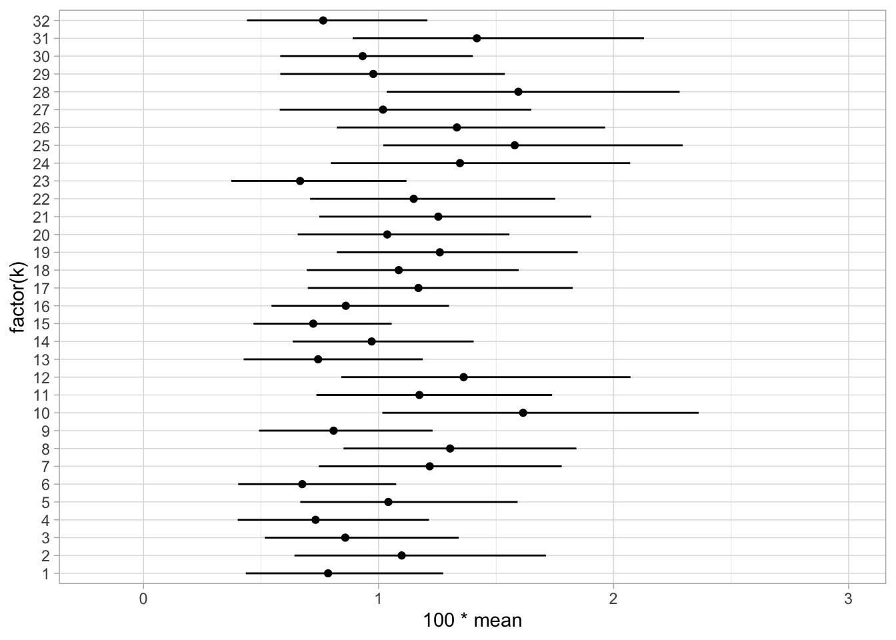
Comparación con método usual:
resultados <-
bind_rows(resumen_1 |>
select(Edo, prop, prop_se) |>
mutate(estimacion = "clasica",
inf = prop - 2 * prop_se,
sup = prop + 2 * prop_se),
resumen_mod_edo |> select(Edo = k, mean, sd, `2.5%`, `97.5%`) |>
mutate(prop = 100 * mean,
prop_se = 100 * sd,
inf = 100 * `2.5%`,
sup = 100 * `97.5%`,
estimacion = "bayesiana") |>
select(-c(mean, sd)))ggplot(resultados, aes(x = factor(Edo),
y = prop,
ymin = inf,
ymax = sup,
colour = estimacion)) +
geom_point() + geom_linerange(position = position_dodge(width = 0.5)) + coord_flip()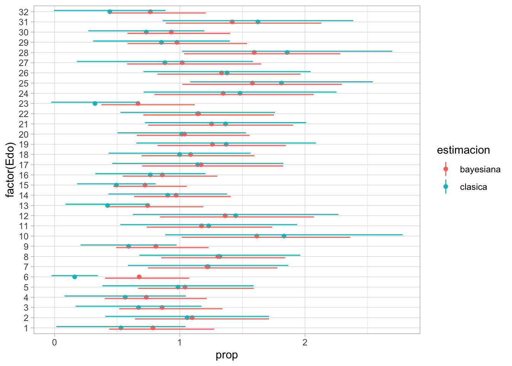
ggplot(resultados, aes(x = prop, y = 2 * prop_se,
colour = estimacion)) +
geom_point() + geom_abline(slope = 0.5) 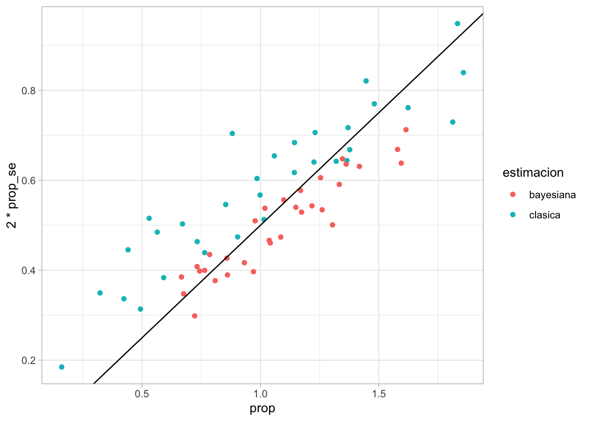
resultados |>
select(Edo, prop_se, estimacion) |>
pivot_wider(names_from = estimacion, values_from = prop_se) |>
ggplot(aes(x = bayesiana, y = clasica)) + geom_point() +
geom_abline() + labs(subtitle = "Errores estándar")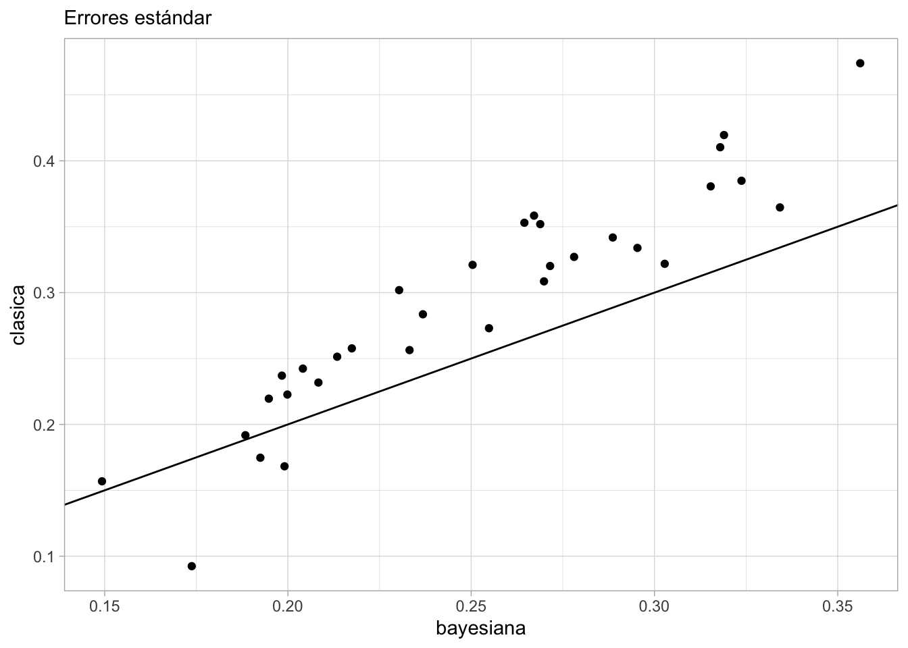
Note
Idealmente, en estos modelos podemos simular toda la población (marco), evitando el uso de ponderadores. Esto también permite utilizar modelos que tomen en cuenta, por ejemplo, la composición de edades de cada sección o ump.
En este ejemplo utilizamos los ponderadores (pues para este ejercicio no tenemos disponible el marco).
Modelo: Iniciales para modelo bayesiano
modelo_sim <- cmdstan_model("./stan/actualizacion-prop-sim.stan")sim_datos_lst <- datos_lst
sims <- modelo_sim$sample(
data = datos_lst,
seed = 1253,
chains = 1,
parallel_chains = 1,
refresh = 0,
iter_warmup = 0,
iter_sampling = 1000,
fixed_param = TRUE
)Running MCMC with 1 chain...
Chain 1 finished in 2.8 seconds.props_sim <- sims$draws("prop", format = "draws_df")
quantile(props_sim$prop, c(0.01, 0.99)) 1% 99%
0.004160899 0.145120780 ggplot(props_sim,
aes(sample = prop)) + geom_qq()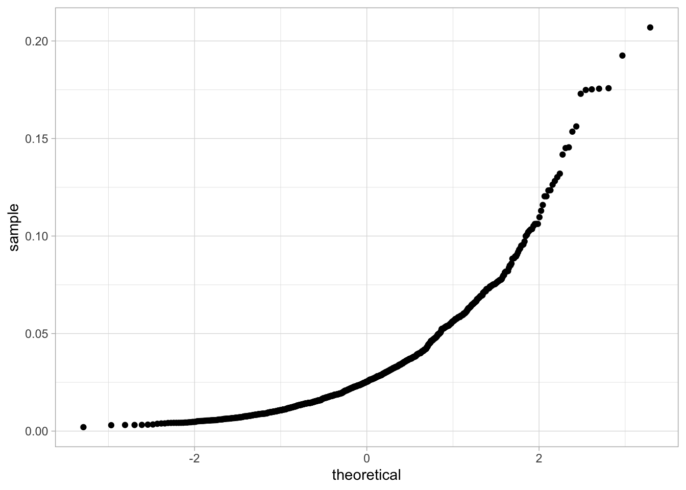
estado_sim <- sims$draws("prop_estado", format = "draws_df") |>
pivot_longer(cols = contains("prop_estado")) |>
separate(name, into = c("x", "x2", "k")) |>
mutate(k = as.integer(k)) |> filter(.draw <= 20)Warning: Dropping 'draws_df' class as required metadata was removed.Warning: Expected 3 pieces. Additional pieces discarded in 32000 rows [1, 2, 3,
4, 5, 6, 7, 8, 9, 10, 11, 12, 13, 14, 15, 16, 17, 18, 19, 20, ...].ggplot(estado_sim, aes(x = k, y = 100 * value)) +
geom_point() + facet_wrap(~.draw) +
geom_hline(yintercept = 5, colour = "red") +
scale_y_log10()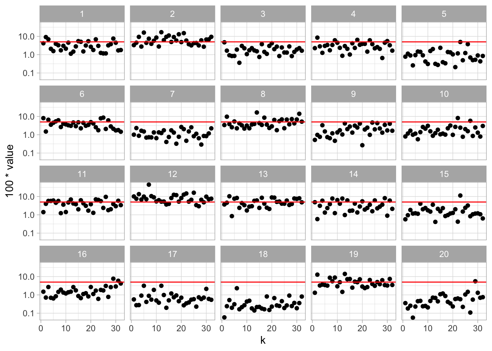
- Puede haber considerable variación entre estados. También puede ser que todos tengan valores muy bajos.
- Existen algunas simulaciones algo extremas (por ejemplo, un estado con más de 10% de fallecidos), pero tienen probabilidad relativamente baja.
Modelo: Chequeos predictivos posteriores
Primero checamos si los intervalos posteriores cubren a los valores observados a nivel estrato:
sim_post <- ajuste$draws("y_rep", format = "df") |>
pivot_longer(cols = contains("y_rep")) |>
separate(name, into = c("x", "y", "num_upm_tipo", "z"),
convert = TRUE)Warning: Dropping 'draws_df' class as required metadata was removed.sim_post_2 <- sim_post |> select(.draw, num_upm_tipo, value) |>
left_join(datos_mod_tbl |> mutate(num_upm_tipo = row_number())) Joining, by = "num_upm_tipo"sim_post_estrato <- sim_post_2 |> group_by(.draw, Edo, Estrato) |>
summarise(value = sum(value), n_obs = sum(n_obs), d_redom = sum(d_redom))`summarise()` has grouped output by '.draw', 'Edo'. You can override using the
`.groups` argument.resumen_estrato <- sim_post_estrato |> group_by(Edo, Estrato) |>
summarise(media_val = mean(value), q95 = quantile(value / (d_redom), 0.95),
q5 = quantile(value/(d_redom), 0.05),
p_obs = first(n_obs) / first(d_redom)) `summarise()` has grouped output by 'Edo'. You can override using the `.groups`
argument.ggplot(resumen_estrato, aes(x = as.integer(factor(Estrato)), y = p_obs, ymin = q5, ymax = q95)) +
geom_point(colour = "red") +
geom_linerange()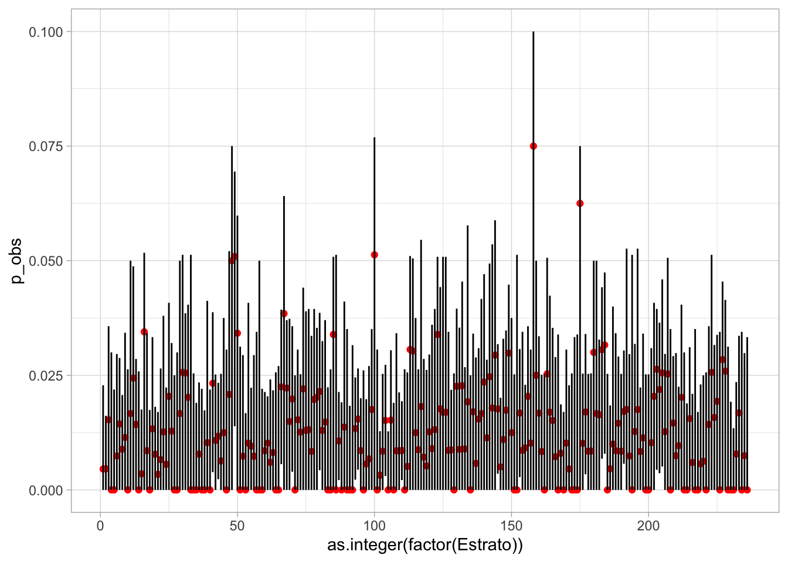
Podemos comparar varias simulaciones con los resultados por UPM:
set.seed(58381)
sim_post_upm <- sim_post_2 |> filter(.draw %in% sample(1:1000, 8)) |>
group_by(.draw, Edo, Estrato, UPM) |>
summarise(value = sum(value), n_obs = sum(n_obs), d_redom = sum(d_redom))`summarise()` has grouped output by '.draw', 'Edo', 'Estrato'. You can override
using the `.groups` argument.datos_obs_tbl <<- sim_post_upm |>
select(Edo, Estrato, UPM, value = n_obs, d_redom) |>
unique() |>
filter(d_redom != 0) |>
mutate(.draw = "obs")Adding missing grouping variables: `.draw`sim_post_upm_2 <- bind_rows(
sim_post_upm |> mutate(.draw = as.character(.draw)),
datos_obs_tbl)
ggplot(sim_post_upm_2 |> filter(d_redom!=0),
aes(sample = value / d_redom)) +
geom_qq(distribution = stats::qnorm) +
facet_wrap(~ .draw) + scale_y_sqrt()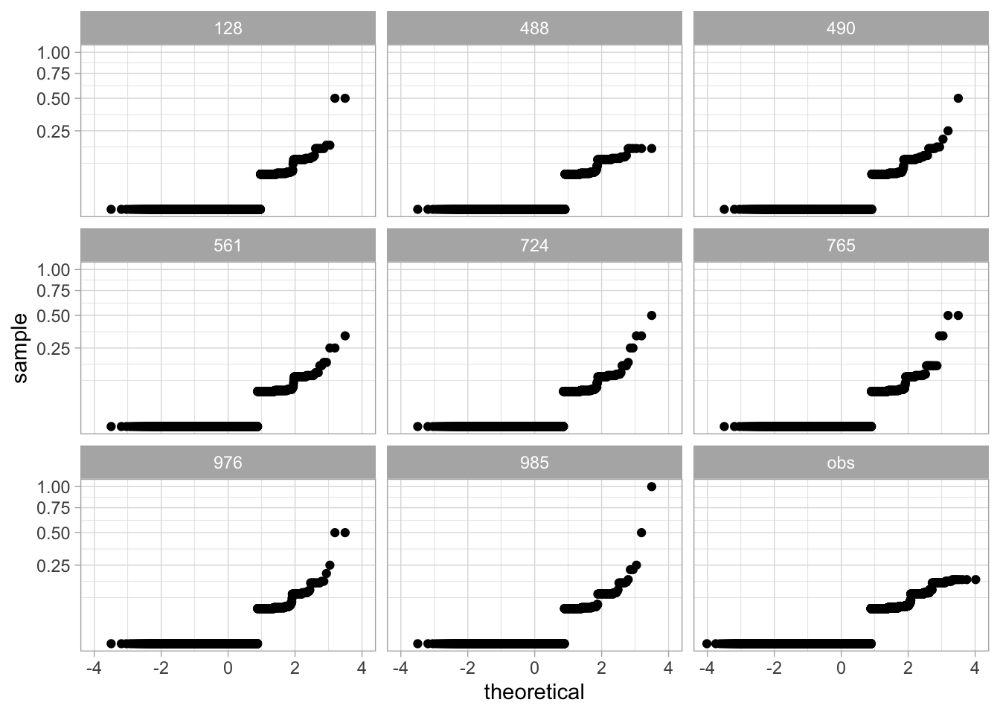
Podemos ver que los datos son consistentes con las simulaciones del modelo, en cuanto a cómo se distribuyen los fallecimientos a nivel UPM.
Pruebas con otras variables
Abajo mostramos ejemplos de un modelo aplicable para proporciones que no estén cerca de 0 o 1, y puede ser de uso general:
Code
datos_mod_tbl <- act_tbl |>
mutate(tipo = ifelse(
(Cred_Vigencia_2019_o_2020 == 1 | Cred_Vigencia_2021), 1, 2)) |>
select(Estrato, UPM, Edo, tipo, N_ReDom, D_ReDom, Ponderador) |>
group_by(Estrato, UPM, Edo, tipo) |>
summarise(n_obs = sum(N_ReDom),
d_redom = sum(D_ReDom),
Ponderador = sum(Ponderador * D_ReDom),
n = n()) |>
ungroup() |>
mutate(upm_num = as.integer(factor(UPM))) |>
mutate(estrato_num = as.integer(factor(Estrato)))`summarise()` has grouped output by 'Estrato', 'UPM', 'Edo'. You can override
using the `.groups` argument.Code
secciones_tbl <- datos_mod_tbl |> select(estrato_num, upm_num) |>
unique() |> arrange(upm_num)
estrato_secc <- secciones_tbl$estrato_num
datos_lst <- list(gamma = 0, gamma_de = 1.5,
N = nrow(datos_mod_tbl),
num_secciones = max(datos_mod_tbl$upm_num),
num_estados = 32,
num_estratos = max(datos_mod_tbl$estrato_num),
y = datos_mod_tbl$n_obs,
n = datos_mod_tbl$d_redom,
tipo_cred = datos_mod_tbl$tipo,
ponderador = datos_mod_tbl$Ponderador,
estrato = datos_mod_tbl$estrato_num,
seccion = datos_mod_tbl$upm_num,
estado = datos_mod_tbl$Edo,
estrato_secc = estrato_secc
)modelo <- cmdstan_model("stan/actualizacion-prop.stan")
ajuste <- modelo$sample(
data = datos_lst,
seed = 123,
chains = 4,
parallel_chains = 4,
refresh = 500, # print update every 500 iters
iter_warmup = 300,
iter_sampling = 700
)Running MCMC with 4 parallel chains...
Chain 1 Iteration: 1 / 1000 [ 0%] (Warmup) Chain 1 Informational Message: The current Metropolis proposal is about to be rejected because of the following issue:Chain 1 Exception: binomial_logit_lpmf: Probability parameter[2675] is inf, but must be finite! (in '/var/folders/30/ztm9p9fx41v0s3w8g3qc9wd80000gn/T/RtmpRj0m26/model-141e61a10ca33.stan', line 48, column 2 to column 31)Chain 1 If this warning occurs sporadically, such as for highly constrained variable types like covariance matrices, then the sampler is fine,Chain 1 but if this warning occurs often then your model may be either severely ill-conditioned or misspecified.Chain 1 Chain 2 Iteration: 1 / 1000 [ 0%] (Warmup)
Chain 3 Iteration: 1 / 1000 [ 0%] (Warmup)
Chain 4 Iteration: 1 / 1000 [ 0%] (Warmup) Chain 4 Informational Message: The current Metropolis proposal is about to be rejected because of the following issue:Chain 4 Exception: binomial_logit_lpmf: Probability parameter[4020] is -inf, but must be finite! (in '/var/folders/30/ztm9p9fx41v0s3w8g3qc9wd80000gn/T/RtmpRj0m26/model-141e61a10ca33.stan', line 48, column 2 to column 31)Chain 4 If this warning occurs sporadically, such as for highly constrained variable types like covariance matrices, then the sampler is fine,Chain 4 but if this warning occurs often then your model may be either severely ill-conditioned or misspecified.Chain 4 Chain 2 Iteration: 301 / 1000 [ 30%] (Sampling)
Chain 1 Iteration: 301 / 1000 [ 30%] (Sampling)
Chain 3 Iteration: 301 / 1000 [ 30%] (Sampling)
Chain 4 Iteration: 301 / 1000 [ 30%] (Sampling)
Chain 1 Iteration: 800 / 1000 [ 80%] (Sampling)
Chain 4 Iteration: 800 / 1000 [ 80%] (Sampling)
Chain 1 Iteration: 1000 / 1000 [100%] (Sampling)
Chain 1 finished in 16.9 seconds.
Chain 4 Iteration: 1000 / 1000 [100%] (Sampling)
Chain 4 finished in 17.1 seconds.
Chain 2 Iteration: 800 / 1000 [ 80%] (Sampling)
Chain 3 Iteration: 800 / 1000 [ 80%] (Sampling)
Chain 2 Iteration: 1000 / 1000 [100%] (Sampling)
Chain 2 finished in 21.0 seconds.
Chain 3 Iteration: 1000 / 1000 [100%] (Sampling)
Chain 3 finished in 21.4 seconds.
All 4 chains finished successfully.
Mean chain execution time: 19.1 seconds.
Total execution time: 21.5 seconds.ajuste$summary(c("prop")) |>
select(variable, mean, sd) |>
mutate(across(where(is.numeric), ~ 100 *.x))# A tibble: 1 × 3
variable mean sd
<chr> <dbl> <dbl>
1 prop 77.3 0.245Apéndice: Subcobertura de intervalos usuales
Para detalles, ver notas del curso de actualización (última sección), que compara tres métodos para obtener intervalos.
n <- 500 # suponer la muestra efectiva es de 500
p_real <- 0.01
n_sim <- 10000
x <- rbinom(n_sim, n, p_real)
p <- x / n
ee <- sqrt(p * (1-p)) / sqrt(n)
intervalos <- tibble(rep = 1:n_sim,
inf = p - 1.96 * ee, sup = p + 1.96 * ee, p_real = p_real, p = p) |>
mutate(cubre = (inf <= p_real & sup >= p_real))
intervalos |> summarise(cobertura = mean(cubre))# A tibble: 1 × 1
cobertura
<dbl>
1 0.867ggplot(intervalos |> filter(!cubre),
aes(x = rep, y = p, ymin = inf, ymax = sup)) +
geom_linerange() + geom_hline(yintercept = p_real, colour = "red") +
geom_point()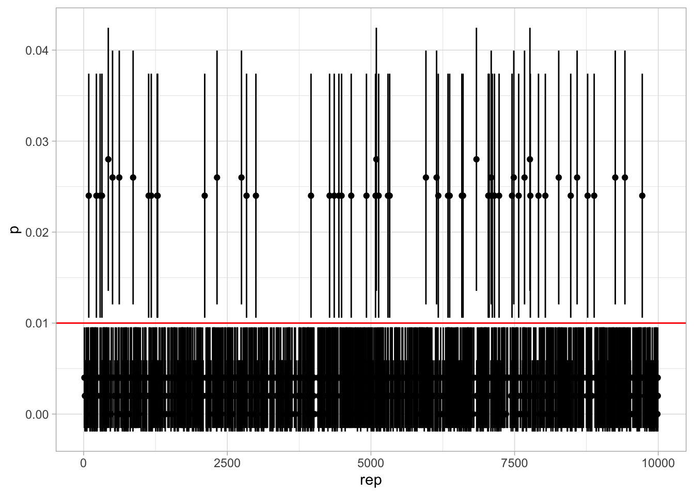